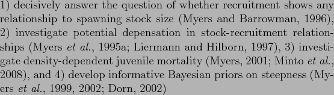
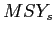
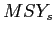
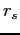
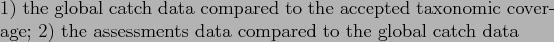
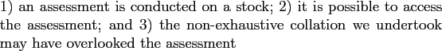

Suggested Title: Assessing the knowledge-base for commercially exploited marine fisheries with a new database of global stock assessments
Alternative Title 1: A new database of global stock assessments for exploited marine fisheries
Alternative Title 2: Assessing the geographic and taxonomic coverage of marine fisheries using a new database of global stock assessments
Suggested Running Title: A database of global stock assessments
Data used to assess the status of individual fish stocks varies from
very little information on many of the world's artisanal fisheries, to
commercial landings at various levels of geographic and taxonomic
aggregation, research surveys, and sophisticated population dynamics
models that integrate many sources of information. Previous
evaluations of the state of global fisheries have used catch or
landings data, which may be poor proxies for fish stock abundances. A
global compilation of stock assessment data in the mid-1990s enabled
substantial syntheses of stock status; however the focus of this
database was on stock-recruitment relationships and it is now 15 years
out of date. To facilitate contemporary syntheses, we have assembled a
comprehensive database of the most intensively studied commercially
exploited marine fish stocks. The database includes time series of:
total biomass, spawner biomass, recruits, fishing mortality, and
catch; reference points; and ancillary information on the life
history, management, and assessment methods for each stock. Here, we
present the first overview of the structure and content of the
database. We further evaluate the knowledge-base for assessed marine
fishes. Globally, publicly available stock assessments were found for
347 stocks (305 species of
fishes representing 46 families and
42 species of invertebrates representing
13 families), from 18
national and international management institutions. Assessments are
available for only XX percent of global marine fisheries catches by
weight and XX percent by value. There is substantial spatial
variation in availability of assessed stocks, with XX percent coming
from north temperate regions (North Atlantic, North Pacific).
Geographic differences in assessment methods show that Statistical
Catch at Age (SCA) models are widely used by the west coast of the
U.S. (XX percent of assessments), regional fishery management
organizations in the Pacific (XX percent of assessments), and New
Zealand (XX percent of assessments); the east coast of the U.S. is
transitioning from Virtual Population Analysis (VPA) to SCA (XX
percent of assessments conducted since 2000 have used SCA); while VPA
is still the dominant assessment
technique in western Europe (XX percent of assessments).
Keywords: Marine fisheries, stock assessment, relational database.
Marine wild capture fisheries provide more than 80 million tons of
fisheries products (both food and industrial) per year and employ 43.5
million people (wild capture and aquaculture, FAO (2009)).
At the same time, fishing has been recognized as one of the most
widespread human impacts in the world's oceans
(Halpern et al., 2008), and the UN Food and Agriculture
Organization estimates that two-thirds of fish stocks are fully
exploited or overexploited (FAO, 2009). While many fisheries
have reduced exploitation rates to levels that should promote
recovery, overfishing continues to be a serious global problem
(Worm et al., 2009). Fishery managers are asked to address
multiple competing objectives including maximizing yields, ensuring
profitability, reducing bycatch, and minimizing the risk of
overfishing. Given the enormous social and economic costs
(Rice et al., 2003) and ecosystems consequences
(Myers et al., 2007; Frank et al., 2005) of collapsed
fisheries, it is imperative that we are able to quickly learn the
lessons of successful and failed fisheries from around the world.
Effective management of exploited fish populations generally requires
an understanding of where the current population size and harvest rate
lie in relation to the population size and harvest rate which maximize
fishery benefits or limit the risk of overfishing. This process of
quantitative determination of stock status and estimation of reference
points is called stock assessment. Some fisheries in developing
countries have apparently provided sustainable yields for long periods
of time without formal stock assessment (e.g., many community-managed
fisheries in Oceania, Johannes (2002)). This has been achieved by
limiting harvest rates, often through gear restrictions or seasonal or
area closures. In modern industrialized fisheries where fishing
capacity exceeds the productivity of fished stocks, however, stock
assessment is an integral component of responsible
management (Hilborn & Walters, 1992).
Even in developed countries, however, not all stocks are assessed.
For example, in 2007, of the 528 fish and invertebrate stocks
recognized by the National Marine Fisheries Service (NMFS), only 179
or slightly over one third were fully assessed (National Marine Fisheries Service, 2008). An
assessment by the European Environment Agency (EEA) in 2006 indicated
that the percentage of commercial landings obtained from assessed
stocks ranged between 66-97 percent in northern European waters and
30-77 percent in the Mediterranean (European Environment Agency, 2009). The New Zealand
Ministry of Fisheries reports the status of 117 stocks or sub-stocks
out of a total of 628 stocks managed under New Zealand's Quota
Management System (New Zealand Ministry of Fisheries, 2009). In Australia, 98 federally managed
stocks have been assessed (Wilson et al., 2009) out of an unknown
total. The extent to which stocks are assessed elsewhere in the world
is currently unknown.
The global database of fishery landings compiled by Food and
Agricultural Organization of the United Nations (FAO, 2009)
and synthesized by the Sea Around Us project
(Watson et al., 2004) has proven to be a valuable resource
for understanding fishery status; however, catch data alone can be
misleading when used as a proxy for stock size. Many papers have used
these catch databases to examine changes in fishery status
(Worm et al., 2006; Costello et al., 2008), including
changes in trophic level (Essington et al., 2006; Pauly et al., 1998; Newton et al., 2007).
Most of these analyses rely (either explicitly or implicitly) on the
assumption that catch or landings is a reliable index of stock size.
Critics have pointed out that catch can change for a number of reasons
unrelated to stock size, including changes in targeting, fishing
restrictions, or market preferences (Hilborn, 2007; Murawski et al., 2007; de Mutsert et al., 2008). Even
when catch is standardized by the amount of fishing effort
(catch-per-unit-of-effort, CPUE), it can be an unreliable index of
relative abundance (Walters, 2003; Harley et al., 2001; Polacheck, 2006; Hutchings & Myers, 1994).
Stock assessments consider time series of catch along with other
sources of information such as: natural mortality rates, changes in
size or age composition, stock-recruitment relationships, and CPUE of
different sectors or of fishery-independent surveys. Because they
integrate across multiple sources of information, stock assessment
models are thought to provide a more accurate picture of changes in
abundance than catch data alone (Sibert et al., 2006). Yet,
without a current and comprehensive database of stock assessments,
scientists wishing to conduct comparative analyses of marine fish
population dynamics and fishery status have little choice but to use
problematic catch data.
The first global database of stock assessment information, the Myers
Stock Recruitment Database, was developed by Ransom Myers and
colleagues in the mid-1990s (Myers et al., 1995b). While
the database was primarily known for its time series of stock and
recruitment, it did contain time series of fishing mortality rates for
many stocks but biological reference points were largely absent. The
original release version of the Myers database
(Myers et al., 1995b) contained spawning stock size and recruitment time series
for 274 stocks representing 92 species as well as time series of
fishing mortality rates for 144 stocks.
It was used to:

, amongst others. The Myers
database has also been used for several studies of collapse and
recovery of exploited fish populations (Hilborn, 1997; Hutchings, 2000,2001) and to study depensation dynamics (Garvey et al., 2009).
Although the original Myers database (Myers et al., 1995b)
has proven to be a valuable resource, it is now 15 years out of date.
For stocks that were depleted in 1995, these additional 15 years
include valuable observations at low stock size or of a recovering
population, both of which are critical for estimating population
dynamics parameters such as the slope of the stock-recruitment
relationship near the origin and for evaluating evidence for
depensation. In addition, there have been numerous improvements in
stock assessment methodologies (including important advances in
statistical catch-at-age or catch-at-length models) and assessments
have been conducted for the first time for many species.
Previous meta-analyses of fishery status have been hampered by the
lack of a global assessment database containing biological reference
points (BRPs, e.g., the biomass and fishing mortality rate that
produce maximum sustainable yield,  and
and  ). Knowledge of BRPs
is important if stocks are to be managed for high yields that can be
sustained over time (Mace, 1994). Without information on
reference points, previous analyses of stock assessments or catch data
have been forced to use non-biological thresholds to define fishery
status, such as the greatest 15 year decline
(Hutchings &
Reynolds, 2004) or 10 percent of maximum catch
(Worm et al., 2006). Ad hoc reference points based on some
fraction of the maximum of a time series also have undesirable
statistical properties and can result in false collapses when applied
to inherently variable time series of catch or abundance
(Branch, 2008; Wilberg & Miller, 2007). Complicating
comparisons of fishery status is the fact that different BRPs are used
in different parts of the world and even the same BRP can be used in a
different manner, for example, as a target or a limit.
). Knowledge of BRPs
is important if stocks are to be managed for high yields that can be
sustained over time (Mace, 1994). Without information on
reference points, previous analyses of stock assessments or catch data
have been forced to use non-biological thresholds to define fishery
status, such as the greatest 15 year decline
(Hutchings &
Reynolds, 2004) or 10 percent of maximum catch
(Worm et al., 2006). Ad hoc reference points based on some
fraction of the maximum of a time series also have undesirable
statistical properties and can result in false collapses when applied
to inherently variable time series of catch or abundance
(Branch, 2008; Wilberg & Miller, 2007). Complicating
comparisons of fishery status is the fact that different BRPs are used
in different parts of the world and even the same BRP can be used in a
different manner, for example, as a target or a limit.
Here we present a new global database of stock assessments for
commercially exploited marine fish populations. The database is an
update and extension of that developed by Ransom Myers, and is named
the RAM Legacy database in honor of his pioneering contribution. This
effort is the first global stock assessment database to:
- Use a formal relational database structure;
- Use source control software to handle release versions are maintained;
- Include metadata related to the geographic location of the stock, the type of assessment model used, and the original source document for the assessment data;
- Include biological reference points and stock-specific life history information.
We use the database to assess the knowledge-base for management of marine fish populations and address the following questions:
- What fraction of world wild-capture fishery landings come from assessed stocks and how does this proportion vary by region?
- What is the temporal coverage of stock assessments, i.e. how far back do stock assessments look when reconstructing trends in abundance?
- What are the taxonomic and geographic biases, if any, in assessed stocks?
- Which stock assessment approaches are used and how does this vary by region?
- What biological reference points are reported in assessments and how does this vary by region?
- How accessible is stock assessment information in different regions?
Publicly available stock assessments were collated by a number of
recorders who transferred the available information to a
spreadsheet template for inclusion in the relational database
management system.
The database follows a relational model and is implemented in the Open
Source PostgreSQL relational database management system
(PostgreSQL Global Development Group, 2009). The database design houses tables for:
assessment metadata, timeseries values, timeseries units, biometrics
(catch-all term for data, such as life history characteristics or
BRPs, that are not part of a timeseries), spatial information,
management body, and taxonomy. An entity relationship diagram
detailing the data structure is presented in the Supporting
Information. The assessment methodology (Virtual Population Analysis,
Statistical catch-at-age/length, etc.) and assessor were also
recorded.
Publically available stock assessment reports available from the
interent were the primary data source. These reports were obtained
either from the online site of the relevant management agency or
directly from stock assessment scientists. Given the range of
assessment types, people and agencies involved, it was necessary to
design a flexible data entry protocol that captures all pertinent
information available about the different stocks.
Data were entered, by an assessment recorder (preferably an assessment
author), into a spreadsheet template file, which has three worksheets:
(1) meta, (2) biometrics, (3) timeseries. The template was flexible in
that stock-specific information could be added depending on the scope
of the information contained within the assessment. The `meta'
worksheet contained information about the stock (e.g. taxonomic
information), the recorder entering the data, and references for the
stock assessment document. The `biometrics' worksheet was where point
estimates (not time series) were entered. This included life history
information, biological reference points, as well as details about the
time series data such as the age and sex of spawners, the ages used to
compute the fishing mortality etc. The `timeseries' worksheet
contained the entered time series data for the stock. Depending on the
type of assessment conducted, model results were available for year,
SSB (spawner stock biomass), TB (total biomass), R (recruits), TC
(total catch), F (fishing mortality).
The goal of the database quality control was to help ensure that the data entered
mirror those present in the assessment document. The process consisted
of entering the submitted assessment spreadsheet into a development
database from which an automatic summary document was generated. This document contained: summary details of the stock,
a selection of biometrics and ratios for comparison (e.g. current
biomass relative to the reference point), and time series plots of the
biomass, recruitment, and exploitation trajectories. This ``Quality
Assurance/Quality Controlled (QA/QC)'' document was then returned to
the assessment recorder and subsequent correspondence was captured in a
Plone bug tracking system so that an electronic trail was established.
Once the assessment recorder checked the QA/QC document and, if
necessary, amended the assessment spreadsheet, the final spreadsheet
was entered into the operational database and a quality controlled
flag is inserted to signify that the data have passed this check.
To facilitate analyses, a variety of data products, typically
rectangular, matrix-like, summarised contents of information from the
database were constructed. This include summarised timeseries for a
subset of metrics (e.g. SSB, TB, R, TC and F) as well as timeseries which
fulfill certain criteria (e.g. all SR pairs with years of
data). These products were assembled as database views using the
Structured Query Language (SQL).
To obtain a comparable set of BRPs, for all stocks  with available
total catch () and total biomass (
with available
total catch () and total biomass ( ) timeseries data (
) timeseries data ( ,
,
 and
and
 ,
), a Schaefer
surplus production model was used to estimate total biomass and
fishing mortality at Maximum Sustainable Yield (
,
), a Schaefer
surplus production model was used to estimate total biomass and
fishing mortality at Maximum Sustainable Yield ( and
, respectively).
and
, respectively).
where,
-  is the intrinsic growth rate of stock
 is the carrying capacity of stock
is the carrying capacity of stock
- is the catch of stock in year
and can then be calculated as:
The database was designed to accomodate multiple users and
collaborators and to maintain its usefulness as its contents grow.
Users familiar with Structured Query Language (SQL) can query the
database directly from their analytical software of choice via
appropriate connection settings (e.g. Open Database Connectivity
(ODBC) connection and other examples can be found in the Supporting
Information). Database views assist this level of entry by formatting
data to be returned in column format such as those typically held in
spreadsheets. This entry approach minimizes the risk posed by the
alternative static copy, whereby changes enter and are inherited in
the process of dissemination (Barbrook et al., 1998, for a literary
example).
To facilitate integration of the RAM Legacy database with related
databases, such as Fishbase (Froese & Pauly, 2009) and the
Sea Around Us Project's (SAUP) global landings database
(Watson et al., 2004), each species present in the RAM Legacy
database was assigned a matching FishBase species name and species
code as well as the SAUP taxon code. Additonally, each stock was
assigned to a primary, secondary, and tertiary Large Marine Ecosystem
(NOAA, 1998). Open ocean species that do not fit the LME
classification (e.g. highly migratory species such as tuna) were
assigned to new categories ``Atlantic High Seas'', ``Pacific High
Seas'', ``Indian High Seas'', and ``Aubantarctic High Seas''. These
steps ensure that researchers using data from the database can easily
find matching data from other data sources without unnecessary linking
difficulties.
The holdings of assessments are summarised by their geographic
coverage, their management regime, the type of assessment used. We
also identify assessments where other life-history parameters are
identified in the reference assessment document. The available
timeseries for different stocks are examined in terms of their
duration in years and first and last years of assessment time window.
Taxonomic coverage in the database was compared to the diversity of
marine fishes in global fisheries landings (as represented by the SAUP
database) and all marine fishes (as represented by FishBase). We
compare the taxonomic information of the three different data sources
to determine the taxonomic bias of

.
In total, 347 recent stock assessments for
305 marine fish and 42
invertebrate populations are included in the RAM Legacy database
(Version 1.0, 2010). These include all stocks assessed by fisheries
agencies in European Countries (International Council for the
Exploration of the Sea (ICES), n=64), the United
States (National Marine Fisheries Service (NMFS),
n=150), Canada (Department of Fisheries and
Oceans (DFO), n=32), New Zealand (Ministry of
Fisheries, n=29), Australia (Australian
Fisheries Management Authority (AFMA) n=16),
South Africa (Department of Environment and Tourism, Marine and
Coastal Management (DETMCM), n=14) and
Argentina (Consejo Federal Pesquero, n=6). Also
included are assessments conducted by Regional Fisheries Management
Organizations (RFMOs) in the Northwest Atlantic (Northwest Atlantic
Fisheries Organization (NAFO), n= 10), Atlantic
(International Commission for the Conservation of Atlantic Tunas
(ICCAT), n=10), Pacific (Western and Central
Pacific Fisheries Commission, n=4 and South
Pacific Regional Fisheries Management Organization,
n=1 and Inter-American Tropical Tuna
Commission, n=2 and International Pacific
Halibut Commission, n=1) and Indian Ocean
(Indian Ocean Tuna Commission, n=1).
The three Large Marine Ecosystems (LMEs) with the most number of assessed populations entered are the: Northeast U.S. Continental Shelf (n=74), California Current (n=36) and New Zealand Shelf (n=29) (Figure B.2).
The taxonomic coverage of the database includes 168 species from 59 families. This comprises a relatively small proportion of caught taxa and a smaller proportion of marine fish biodiversity (Figure B.2).
Three taxonomic orders (Gadiformes, Pleuronectiformes Perciformes and Scorpaeniformes) account for 67% of available stock assessments.
The number and median lengths of timeseries stored in the RAM Legacy database are catch/landings: n=321, length=38 years, SSB: n=275, length=34 years, and recruitment: n=270, length=33 years (Figure B.2).
Of the 347 assessments in the database, 321 use a proper population dynamics model while the remaining 26 are based on scientific survey information. The most common assessment methods were Statistical catch-at-age/length models (n=162), Virtual Population Analyses (n=89) and Biomass dynamics model (n=44).
The total number and percentage of assessments that reported biomass- or exploitation- based reference points was 261 (75%) and 223 (64%), respectively. While the total number and percentage of assessments that reported any life-history information (growth, maturity, fecundity) was REF:SQL:NUMASSESSLIFE.
The compilation of available stock assessments for the world's marine
fisheries, although non-exhaustive, provides a basis to evaluate the
existing knowledge-base of populations under exploitation. The stocks
comprising the database are predominantly from developed nations with
properly identified fisheries management bodies and tendq to cover a
recent time period. Few assessments extend back beyond 30 years from
present. The taxonomic makeup of available assessments is a very
limited subset of the accepted taxonomic coverage of marine species
worldwide.
Large Marine Ecosystems were defined by NOAA (NOAA, 1998).
They encompass the continental shelves of the world's oceans and
represent the most productive areas of the oceans. However, they do
not include a classification category for large migratory species such
as tuna that also inhabit the open ocean and is not associated with
given LMEs. Each species of highly migratory species is also observed
in a number of LMEs. While the global coverage of LMEs is beneficial
to classify assessments from around the world, it is debatable whether
once can use each LME as an independent unit of comparison.
There are important geographic biases in the amount of assessments
entered per LME (Figure B.2). A large proportion of
assessments come from North America, Europe, Australia, New Zealand
and the High Seas. Few assessments are entered from regions such as
Southeast Asia, South America, and the Indian Ocean (outside
Australian waters). The question of geographic bias relates to
whether:

. Whether an assessment is
conducted for a given stock depends upon a multitude of factors,
including the economic value of the stock and availability of fiscal
resources to collect the data required for an assessment. How
accessible assessments are for entry depends upon the transparency and
access policies of the relevant management agencies, which varies
geographically. Similarly, the legal context where fisheries are
prosecuted will strongly influence the requirement for conducting
stock assessments. In the United States, the Magnuson-Stevens Act
defines what stocks are to be monitored and managed, hence a large
number of the assessments in the RAM Legacy database are under the
jurisdiction of the US National Marine Fisheries Services.
Our incomplete search for assessments could also give rise to
geographic biases, as concerted collation efforts have only been
conducted in those assessment-rich regions of Figure B.2.
It is hoped that readers of this article can assist in correcting
these biases by participating in future updates of the RAM Legacy
database.
The accepted taxonomic coverage of fish and elasmobranch species from
FishBase includes 12339 species from 54 different orders. In comparsion,
the SAUP data is from XX species and XX orders. Taxonomic biases in
those species that are assessed include ...
Global fish catches represent XX% of the accepted taxonomic coverage
for fish species.
The assessed stocks present in the RAM Legacy database represent XX%
of the global catch for fish species.
Assessment outputs e.g. biomass timeseries, are estimates, not raw
data. The uncertainty associated with these estimates should be
carried forth in subsequent analyses. The RAM Legacy database
structure allows for estimates of uncertainty (standard errors, 95%
credible/confidence intervals), however these estimates are only
occassionally provided because they aren't produced by the assessment
model (e.g. non-bootstrapped VPA assessments) or the focus of the
assessment document was on central tendency (e.g. mean biomass), not
the associated uncertainty. Note that this view is changing with the
advent of MCMC aproaches to Bayesian inference for assessments,
bootstrap methods, statistical catch-at-age models and a focus on
uncertainty (Walters & Maguire, 1996). As with any
analysis, clearer inference on the strength of a signal is available
when all uncertainty in the data is carried forth. This represents a
difficulty for large-scale analyses of fisheries data in that in an
ideal world one would access the raw data per sub-unit (e.g. stock)
and carry forth the uncertainty at all levels of the analysis. In the
case of assessments, the raw data is typically catch-at-age matrices
and potentially survey indices. To understand the fleet
characteristics and survey stratification schema for each stock in a
potentially global meta-analysis would be extremely time consuming and
error-prone. So, the expert opinion of those researchers most familiar
with the data, stock assessment authors, is used but without
accompanying uncertainty estimates the strength of conclusions drawn
may be weakened.
The original database developed by Dr. Myers was used to address a
variety of ecological question derived from stock-recruit
relationships. This was possible because of the timeseries of stock
and recruitment generated in assessment using VPA-type models. With
the increasing use of statistical catch-at-age/length models, an
underlying stock-recruit relationship is assumed to exist. Estimating
the parameters of a stock-recruit relationship using timeseries from
such models does not constitute a valid statistical procedure.
Point data are stored in the database with an associated unit, value
and year. We expect to also include age-varying and length-varying
data such as maturity ogive and age-disaggregated natural mortality in
subsequent releases of the RAM Legacy database. In addition to the
initial aim of providing reliable access to timeseries information
about stocks, we hope to also stimulate research in the relationships
of life-history characteristics and their relation to exploitation.
Housing assessments in a Relational Database Management System (RDBMS)
allows mutliple users to concurrently access and extract subsets of
persistent data in an efficient and reproducible manner. With the
development of Application Programming Interfaces (APIs) that allow
analytical softwares to directly communicate and extract data from the
database, a common data environment is established, independent of
ones choice of analytical software e.g. (SAS:SAS ACCESS, Matlab:
Matlab/Database, R:RDBI/RODBC, Perl:DBI, etc.). In all these
applications the same SQL query will extract the same data. A data
product tailored to a specific project can be generated and stored as
a dynamic (continually updated) ``view'' within the database. These
are typically spreadsheet-like results of an expansive query of the
relevant tables that can be readily read into all commonly-used
analytical softwares. In contrast, manipulating flat text files or spreadsheets for
importing into a specific analytical software runs the risk of losing
data integrity and becomes impractical with large, non-rectangular,
datasets. Full benefits of the database can be realized through the
development of tailored queries to suit one's analyses. Such queries
require an understanding of the structure of the various data within
assessments. RDBMSs form the server back-end to a great many
applications of interest to ecologists, including web-clients and GIS
softwares.
It is anticipated that the RAM Legacy database will continue to grow
with hitherto unentered and updated assessments. The ultimate goal is
to provide a data standard for researchers to use results from
multiple regions to assist in their own applied and fundamental
research in population ecology. The development of a standard for
assessment reporting would assist in realizing this goal. For example,
ICES assessments have a very regular standard, including agreed-upon
reference points and regular estimate reporting. This makes the
process of data collation much more routine than unstandardized
documents where the recorder trawls through a report for information.
Certainly different stocks and regions require different formats but
the basic output tables, consisting of total and spawning biomass,
recruitment, catch/landings, estimated fishing mortality over
vulnerable age groups, associated measures of uncertainty, and
commonly-used reference points would streamline the process immensely.
A process whereby the assessment spreadsheets are filled out at each
assessment meeting would be the least error prone method. In return,
the assessment scientists can access results for a global collation of
assessments to further their own research initiatives in population
assessment and management. Other products include
management-agency-level reports containing summaries of all stocks
within their remit. Future versions to the database will also include
timelines of management actions per stock. The RAM Legacy database
contains the corresponding species codes to the Sea Around Us Project
and FishBase, thus facilitating researchers's use of a global
fisheries data ``toolkit'' to address questions on the relationships
between life history attributes and resulting population
dynamics in an exploited setting.
Contributions or corrections to the existing database, as well as
requests to use the database (subject to standard ``Fair Use''
policies), should be directed to the corresponding author.
Funders: NCEAS, NSERC, CFI, Smith Fellowship, CoML/FMAP, assessment scientists
Help: Rainer Froese, Dirk Zeller, Boris Worm, Ray Hilborn, Mike Fogarty, Ana Parma, Jeff Hutchings, Trevor Branch
All recorders:
-
Barbrook, A., Howe, C., Blake, N. & Robinson, P. (
1998).
-
The phylogeny of the Canterbury Tales.
Nature (London) 394(6696), 839.
-
Branch, T. (2008).
-
Not all fisheries will be collapsed in 2048.
Marine Policy 32, 38-39.
-
Costello, C., Gaines, S.D. & Lynham, J. (
2008).
-
Can catch shares prevent fisheries collapse?
Science (Washington) 321(5896), 1678-1681.
-
de Mutsert, K., Cowan, Jr., J.H., Essington, T.E. & Hilborn, R.
(2008).
-
Reanalyses of Gulf of Mexico fisheries data: Landings can be
misleading in assessments of fisheries and fisheries ecosystems.
Proceedings of the National Academy of Sciences 105(7),
2740-2744.
-
Dorn, M. (2002).
-
Advice on West Coast rockfish harvest rates from Bayesian
meta-analysis of stock-recruit relationships.
North American Journal of Fisheries Management 22, 280-300.
-
Essington, T.E., Beaudreau, A.H. & Wiedenmann, J. (
2006).
-
Fishing through marine food webs.
Proceedings of the National Academy of Science 103(9),
3171-3175.
-
European Environment Agency (2009).
-
-
FAO (2009).
-
FISHSTAT-PC: Data retrieval, graphical and analytical software for
microcomputers.
-
Frank, K., Petrie, B., Choi, J. & Leggett, W. (
2005).
-
Trophic cascades in a formerly cod-dominated ecosystem.
Science (Washington) 308(5728), 1621-1623.
-
Froese, R. & Pauly, D. (2009).
-
FishBase www.fishbase.org, version (10/2009).
World Wide Web electronic publication.
-
Garvey, J., Wright, R. & Marschall, E. (
2009).
-
Searching for threshold shifts in spawner-recruit data.
Canadian Journal of Fisheries and Aquatic Sciences 66,
312-320.
-
Halpern, B., Walbridge, S., Selkoe, K. et al. (
2008).
-
A global map of human impact on marine ecosystems.
Science (Washington) 319(5865), 948-952.
-
Harley, S., Myers, R. & Dunn, A. (
2001).
-
Is catch-per-unit-effort proportional to abundance?
Canadian Journal of Fisheries and Aquatic Sciences 58,
1705-1772.
-
Hilborn, R., ed. (1997).
-
The frequency and severity of fish stock declines and
increases.
Developing and sustaining world fisheries resources. Proceedings of
the 2nd World Fisheries Congress. CSIRO Publishing, Victoria, Australia.
-
Hilborn, R. & Walters, C.J. (
1992).
-
Quantitative Fisheries Stock Assessment: Choice, Dynamics and
Uncertainty.
Kluwer Academic Publishers.
-
Hilborn, R. (2007).
-
Biodiversity loss in the ocean: how bad is it?
Science (Washington) 316(5829), 1281.
-
Hutchings, J. (2000).
-
Collapse and recovery of marine fishes.
Nature (London) 406, 882-885.
-
Hutchings, J. (2001).
-
Influence of population decline, fishing, and spawner variability on
the recovery of marine fishes.
Journal of Fish Biology Suppl. A, 306-322.
-
Hutchings, J. & Myers, R. (1994).
-
What can be learned from the collapse of a renewable resource?
Atlantic cod, Gadus morhua, of Newfoundland and Labrador.
Canadian Journal of Fisheries and Aquatic Sciences 51,
2126-2146.
-
Hutchings, J. & Reynolds, J. (
2004).
-
Marine fish population collapses: Consequences for recovery and
extinction risk.
BioScience 54, 297-309.
-
Johannes, R. (2002).
-
The renaissance of community-based marine resource management in
Oceania.
Annual Review of Ecology, Evolution, and Systematics 33,
317-340.
-
Liermann, M. & Hilborn, R. (
1997).
-
Depensation in fish stocks: a hierarchic Bayesian meta-analysis.
Canadian Journal of Fisheries and Aquatic Sciences 54,
1976-1984.
-
Mace, P.M. (1994).
-
Relationships between Common Biological Reference Points Used as
Thresholds and Targets of Fisheries Management Strategies.
Canadian Journal of Fisheries and Aquatic Sciences 51(1),
110-122.
-
Minto, C., Myers, R.A. & Blanchard, W. (
2008).
-
Survival variability and population density in fish populations.
Nature (London) 452, 344-347.
-
Murawski, S., Methot, R. & Tromble, G. (
2007).
-
Letter to the editors of Science.
Science (Washington) 316, 1281.
-
Myers, R.A. (2001).
-
Stock and recruitment: Generalizations about maximum reproductive
rate, density dependence and variability using meta-analytic approaches.
ICES Journal of Marine Science 58, 937-951.
-
Myers, R. & Barrowman, N. (1996).
-
Is fish recruitment related to spawner abundance?
Fishery Bulletin 94, 707-724.
-
Myers, R., Barrowman, N., Hilborn, R. & Kehler, D. (
2002).
-
Inferring bayesian priors with limited direct data: applications to
risk analysis.
North American Journal of Fisheries Management 22, 351-364.
-
Myers, R., Barrowman, N., Hutchings, J. & Rosenberg, A.
(1995a).
-
Population dynamics of exploited fish stocks at low population
levels.
Science (Washington) 269, 1106-1108.
-
Myers, R., Baum, J., Shepherd, T., Powers, S. & Peterson, C.
(2007).
-
Cascading Effects of the Loss of Apex Predatory Sharks from a
Coastal Ocean.
Science 315(5820), 1846-1850.
-
Myers, R., Bowen, K. & Barrowman, N. (
1999).
-
Maximum reproductive rate of fish at low population sizes.
Canadian Journal of Fisheries and Aquatic Sciences 56,
2404-2419.
-
Myers, R.A., Bridson, J. & N.J., B. (
1995b).
-
Summary of Worldwide Spawner and Recruitment Data.
Canadian Technical Report of Fisheries and Aquatic Sciences,
No. 2020 p. 327.
-
National Marine Fisheries Service (2008).
-
Status of US Fisheries 2007.
Tech. rep., NMFS.
Http://www.nmfs.noaa.gov/sfa/statusoffisheries/SOSmain.htm.
-
New Zealand Ministry of Fisheries (2009).
-
Stock Status http://fs.fish.govt.nz/Page.aspx?pk=16.
-
Newton, K., Côté, I., Pilling, G., Jennings, S. & Dulvy, N.
(2007).
-
Current and Future Sustainability of Island Coral Reef Fisheries.
Current Biology 17(7), 655-658.
-
NOAA (1998).
-
Large Marine Ecosystems.
Tech. rep., National Oceanic and Atmospheric Administration.
-
Pauly, D., Christensen, V., Dalsgaard, J., Froese, R. & Torres,
Jr., F. (1998).
-
Fishing Down Marine Food Webs.
Science (Washington) 279(5352), 860-863.
-
Polacheck, T. (2006).
-
Tuna longline catch rates in the Indian Ocean: Did industrial fishing
result in a 90% rapid decline in the abundance of large predatory species.
Marine Policy 30, 470-482.
-
PostgreSQL Global Development Group (2009).
-
PostgreSQL, version 8.3.8. http://www.postgresql.org.
-
Rice, J., Shelton, P., Rivard, D., Chouinard, G. & Fréchet, A.
(2003).
-
Recovering Canadian Atlantic cod stocks: the shape of things to come.
ICES CM 2003/U 06, 23pp.
-
Sibert, J., Hampton, J., Kleiber, P. & Maunder, M. (
2006).
-
Biomass, Size, and Trophic Status of Top Predators in the Pacific
Ocean.
Science (Washington) 314(5806), 1773-1776.
-
Walters, C. & Maguire, J. (1996).
-
Lessons for stock assessment from the northern cod collapse.
Reviews in Fish Biology and Fisheries 6(2), 125-137.
-
Walters, C. (2003).
-
Folly and fantasy in the analysis of spatial catch rate data.
Canadian Journal of Fisheries and Aquatic Sciences 60(12),
1433-1436.
-
Watson, R., Kitchingman, A., Gelchu, A. & Pauly, D.
(2004).
-
Mapping global fisheries: sharpening our focus.
Fish and Fisheries 5, 168-177.
-
Wilberg, M. & Miller, T. (2007).
-
Comment on "Impacts of biodiversity loss on ocean ecosystem
services".
Science (Washington) 316, 1285b.
-
Wilson, D., Curtotti, R., Begg, G. & Phillips, K., eds.
(2009).
-
Fishery status reports 2008: status of fish stocks and
fisheries managed by the Australian Government.
Bureau of Rural Sciences and Australian Bureau of Agricultural and
Resource Economics, Canberra.
-
Worm, B., Barbier, E., Beaumont, N. et al. (
2006).
-
Impacts of Biodiversity Loss on Ocean Ecosystem Services.
Science (Washington) 314, 787-790.
-
Worm, B., Hilborn, R., Baum, J.K. et al. (
2009).
-
Rebuilding global fisheries.
Science (Washington) 325, 578-585.
Figure 1. Global map of Large Marine Ecosystems (LMEs) showing the
number of stock assessments present in the database for each LME.
Figure 2. Temporal coverage of (A) catch/landings, (B) spawning stock
biomass and (C) recruitment. The temporal coverage for individual
assessments is represented by thin alternating black and grey
horizontal lines in the main panels. Thick horizontal lines at the
base of each main panel represent the time periods which are present
in 90% (black) and 50% (grey) of all series for that data type.
Subfigure histograms contain the frequency of occurrence of the
various timespans without reference to time period. Solid and
long-dash vertical lines within the subfigures represent the median,
2.5% and 97.5% quantiles, respectively.
Figure 3. Taxonomic coverage of assessed marine species present in the
Myers II database. The circle located near the middle of the circular
dendrogram represents kingdom Animalia and each subsequent branching
represents a different taxonomic group (Kingdom to Phylum to Class to
Order to Family to Genus to Species). The width of each line is
proportional to the square root of the number of assessments in the
database. The outermost lines represent species and the number of
lines is the number of assessments for each species. The names of
multi-assessment species are not repeated on the outermost portion of
the dendrogram but continue counter-clockwise from the first entry.
Note that branch lengths are chosen for graphical purposes and do not
convey phylogenetic distance.
Figure 4:
Entity relationship diagram of the RAM legacy database.
|
Suggested Title: Assessing the knowledge-base for commercially exploited marine fisheries with a new database of global stock assessments
Alternative Title 1: A new database of global stock assessments for exploited marine fisheries
Alternative Title 2: Assessing the geographic and taxonomic coverage of marine fisheries using a new database of global stock assessments
Suggested Running Title: A database of global stock assessments
This document was generated using the
LaTeX2HTML translator Version 2002-2-1 (1.71)
Copyright © 1993, 1994, 1995, 1996,
Nikos Drakos,
Computer Based Learning Unit, University of Leeds.
Copyright © 1997, 1998, 1999,
Ross Moore,
Mathematics Department, Macquarie University, Sydney.
The command line arguments were:
latex2html fishandfisheries-v1 -split=0
The translation was initiated by Stock-recruitment database administrator on 2010-03-10
Stock-recruitment database administrator
2010-03-10